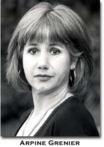

When
I sit down to write, November 25, 2000, I'm beset by a swarming
myriad of diffuse exuberances, agitations, desires, dreads and erotic
terrors, the paralysis I once saw in a hare being chased by a fox
on the median strip of an airport runway—I was seated in the plane
coursing down the runway watching the predatory drama which took
place in a faint wash of fresh December snow. The enormous hare
froze in place and the fox was bearing down fast but as the plane
took off the din and chaotic air disoriented the fox so much that
it ran right past the now-statued hare and trotted out onto the
runway ... I'm always both fox and hare—disoriented, paralyzed,
acting, reacting, freezing or blindly continuing right past my putative
goal to produce some unexpected result.
I
had no idea, for example, that when I sat down to write "when I
sit down to write" I'd end up writing the fox-on-the-runway memory,
which is less than ten years old. I thought I'd write about old
ghosts and older desires, and I'm sure that about a hundred or so
words into this runway I will.
It
strikes me as noteworthy that I've continually imagined the description
of this exercise as beginning "when you sit down to write" and just
this morning—November 25, 2000, after a Thanksgiving in which I
was truly grateful to be alive—more details may follow—just this
morning as I printed out Nada's description-cum-urgent-appeal I
realize it does not say "when you sit down to write" but
rather "during the act of writing..." To what can I attribute this
persistent misprision on my part other than the intrusion of that
anxiety that makes the gearing-up for sitting-down more of an anticipatory
preoccupation than the actual "writing itself" whatever that is?
It's the swarm of ghosts called Mourning, Melancholia, Rage, Perfectionism,
Prozac (cognitive impairment), Tug, Undertow to which I'm losing
my train; there's a brain drain in my think tank.
All
the drama takes place before I "sit down to write," before I'm in
the duration of the act of writing. But all of this is only provisionally
true—some months ago I would have responded differently, I would
have said the whole thing was torture, that I'm lucky to put in
a sentence a day sometimes when I'm working on certain critical
projects. My so-called book for example. At the mention of it my
thoughts scatter like buckshot like a flock of gamebirds startled
by the shot, I can't follow a line of flightwords to any logical
terminus and my heart flutters with restless irritability in the
face of my frenzied inarticulateness. There, now this really is
torture, I can't bear to write those ideas that mean so much to
me—the celebration and analysis of quaint "écriture brute" which
others find contemptibly mediocre, immersed in prefab sentiment,
etc.—newspaper verse, poetry written for funerals by orphaned children—real
tearjerkers that make my avant-garde pals puke, cringe and wince,
and that outrage my craft-oriented poet friends. How can I "explain"
"myself" or my "project" how can I slow this frantic brain-pulse
down sufficiently to present the proper context whereby the beautiful
fragments of raw words that I tend and cherish can be palatably
processed by the "real writers," "real critics," etc. The frustration
becomes embodied in my windpipe—it's the body of my father, who
turned gold and leaf-like in his last days almost thirty years ago
and then on his death his fragile body folded into a fetal ball
and moved wholesale into mine, cutting off my larynx right at throat
level (redundant?)—he got between me and me, I couldn't talk through
him. What if he dissolves and I lose him, at what cost do I write,
claim myself unambiguously as a writer? And then there's the sweet
on-the-verge-of boyfriend I repudiated harshly three days after
my father died, who later turned out to be a murderer, at what cost
do I reclaim that adolescent eroticism in all its enormity? This
confession is spilling out clumsily, hurriedly, and I'm not "connecting"
with it, possibly because it corresponds too closely to what I thought
I was spozed to write, what I see as the psychological underpinnings
of a lifelong "writer’s block." Interesting that I read Nada’s
description as an invitation to confession. "You're so unambiguously
a poet," my college friends would say, "so absolutely a writer,
but you don't write!" And two decades later when I meet the langpos
in Louisville, Charles B asks, "Do you write poetry? I know you
write criticism poetically, but do you write poetry?" Noyesnoyesno,
I try not to think in those genre-divisive terms, but of course
I've internalized them ho-hum.
Writing
"about" the demons and ghosts, Tug, Rage, Undertow and their pals,
doesn't get me anywhere on my travels from dystopia to utopia—from
"sitting down to write" to "during the act of writing." It's not
working, it's a threadbare narrative that does nothing for me, I'm
sick of it, don't wanna be a victim, don't wanna acknowledge my
oppressors by giving them brainspace and page-space, but there they
are (yawn), under the collective rubric called "About." Rhymes with
self-doubt, rhymes with gender, rhymes with not one but two (count
‘em) ex-beaux in the pen for murder, rhymes with silence during
sex (o who cares) rhymes with "the walls are thin with fear," rhymes
with blah blah blah and yada yada, warden, yada yada yada. Rhymes
with so what? Gotta go now, I'll come back in a more utopian moment.
So—when
I sat down to write today, Novmber 27, 2000, at the café, a former
student came up and introduced himself, said he was taking classes
from Lucie Brock-Broido and Carolyn Forché, not bad for a kid whose
creative writing T.A. here at the U of MN told him he was such a
bad poet he should never take another creative writing class. He'd
been out East to check out Harvard and B.U. for grad school, after
the graduate student in our dept here who was in charge of advising
undergrads had told him to forget graduate school, it was impossible
to get in and then impossible to get a job if you did get in, and
I remember that incident, some years ago his coming to my office
almost in tears to tell me this and my saying, don't ever let anyone
piss on your dreams just because they're having a hard day. He cleans
houses to support his poetry habit, it's great to see him. I kept
saying, that was a really fun class you were in, a few years ago,
hoping he'd say, yeah you were one of the best teachers I ever had,
but he didn't. Don't you just hate that? Then a recently retired
colleague pulls up a chair for a long yak about departmental politics
and history, I learn for the first time the deep sexual scandals
of the unit I've been a part of for 12 years. During this conversation
we move to the sunniest window table at the café which becomes available
as we get into it—the dept. chair who ran off with the evil principle
office staff member, the abject incident that explains why so-n-so
is a permanent tenured assistant professor, the controversies around
last year's hiring process. All is pleasant, heartfelt and collegial
and all keeps me from writing when I sit down to write. Thus after
three hours there is no "during the act of writing," but I knew
this would happen and I welcome it.
Now
during the act of writing I am ready to fall in love. A determined
unfolding of the unforeseen, the confident crabbed shaping of ink
traces on blue-lined notebook paper—fragile boats set asail down
blue streams on moseying journeys to themselves, to haven in themselves,
to shelter in their own delicate tracings and outside it begins
to snow. The snow falls on blue rivulets, the page, the sidewalk,
I'm beset with a flurry of side-thoughts—who's in power, who's not—is
it too hard just to make shapes on the blank expanse, the whole
world will be a page soon enough with tracks of etheric detritus
marking human endeavor ... The marvels of oppression marking
themselves in sadomasochistic pleasure-practice. To create is to
destroy etc., we must labor, stitching and unstitching our lips,
hands, eye-skin, to be beautiful and so forth. And what if I overcome
my reactiveness, my oppressors, completely? My writing would be
fully physical, my body would write a house of jewels as I moved
down the sidewalk or the dingy halls of my workplace, there would
be no inside no outside unmarked by wonder of colorsound (wait—would
there be no marking, or nothing unmarked? no inside and no outside,
or no border undecorated? herein lies the tension between spiritual
and aesthetic practice), there would be no space between me and
me, I'd be a continuum of languagebody practice all the time, all
senses revealed in a godhead of continual metamorphosis guided by
the snow, the pen, the hearth, the road, the garment, the mendicant
sensibility of open writing, tattered resplendent, a translucent
golden leaf floating to the frozen ground of being.
Bio:
Maria Damon teaches poetry and poetics at the University of Minnesota.
She is the author of The Dark End of the Street: Margins in American
Vanguard Poetry (U of Minnesota 1993) and, with Miekal And,
co-author of Literature Nation, a poetic hypertext. She
is a member of the National Writers' Union.
Reaction
Chris
Stroffolino
I
react to the love poem I have yet to write, putting the course before
the heart
The
"rea" in front of the "c" of creation
One
of the tasks of life, they say, is to find better tasks, tasks that
become you better. Doing so, however, can be an obstacle to the
other tasks—not just of maintenance and duty that you need to be
occupied in. One begins to wonder how far one is now From where
one wants to be, what one can better be. This distance may be measured
by years and miles But not really convincingly. If
one sees how space and time can collapse And the distance between
present and ideal dissolve And not necessarily because You've duped
yourself into wanting what you have Or demonized the ideal to at
least begrudge yourself the present That wonders how much it can
get accomplished today.
So
I begin by reacting to the fact that I spent a good deal of the
day ("off"). Writing cover letters and preparing applications for
full-time teaching jobs in other places. Too much of the day. I
needed to take a break from the kind of concentration it takes,
the cares it raises more acutely, the hopes, fears "of all the years,"
anxieties, despairs...and allow myself the possibility of Lethean
floating, or at least of the kind of self-analysis that, alas, is
not yet helpful in helping me land a job as a professional talker/listener...
I'm
not really reacting to practicality here; of course I would like
it if the job just came and then I could retroactively say it was
because I was "being myself," etc, and that, even today, such miracles
can happen. But, more profoundly, I'm not really reacting to practicality
because practicality (the practical mode) is a reaction to it, to
this, as that just seems like a reaction to the practical reactions,
but it came first....
I'm
not now going to get into how or why I began writing or how and
why what I wrote got to become, or be called, poetry (by some at
least, and those who don't call it poetry "like Marjorie Perloff"
don't know what else to call it). I am also aware that it may be
very presumptuous of me to call journal writing more natural than
A) Cover letters on the one hand and B) POEMS on the other. I obviously
didn't (don't?) always feel this way. But I do remember about 10
years ago sending some writing which I called poetry to Laynie Brown
and her telling me that it was too much like a journal entry and
not enough like poetry and the image of a parent scolding a child,
"NOW, EAT YOUR PEAS OF POETRY or you'll go to bed without any
dessert of journal writing," flashed through my body, an ouch without
stilts. And so I react to this taboo, which I find takes many other
shapes....
Poetry,
or what is called that, shouldn't be, and can't be forced (maybe
one has to trick oneself, or be tricked by others into writing it,
but that isn't the same as being forced). I think a problem many
poets face after publishing at least one book is that in the social
world, the fact that you've published and performed poems publicly
makes you a POET...and what do poets do? Well, write poems of course.
This circular logic is fine if one can continue to comfortably contain
her or his other interests in that house called poetry, yet few
can and many must strain to do so—not that straining is always a
bad thing (and the circle may be a spiral). Freedom, sometimes,
IS straining for it, while in it.
Sex
is a kind of letting go but also seems to require and enjoy muscle
contractions. Why "up tight" can mean "everything's all right."
Yet, when someone recognized as a poet comes to you at a poetry
reading or costume party, maybe we shouldn't ask: Have you written
any poetry lately? For in so doing we may (unintentionally of course)
become each other's oppressors, encouraging quantity to supplant
quality or what was once a free union to become a social obligation...
So
I react to that feeling of obligation. 5 years ago or so I first
wrote (but didn't publish): "Form is something you do for others;
content yourself," and it stuck. Even if I feel now that the style
of want I want to make public now differs from the style I was writing
when I came up with that aphorism. The two are inseparable of course.
Even the most natural (lazy?) modes of writing "have" form and style.
& I write this also because I look forward to reacting, or seeming
to, react against this
But
I have only begun to consider the possibility of journal-like forms,
and am far from exhausting them. Nor do I believe that this will
necessarily mean that I will come to overcome my oppression more
completely than I do now, but I can, at least, I hope, become less
and less of an oppressor myself (assuming I have been, or am unknowingly
now).
Alan
Davies writes, "[W]hen I see an abundance of formal concentration
I think, the person who did this is not very comfortable with what
they're saying."(Candor 130) I disagreed with this when I
first read it ten years ago, but now am more prone to agree. Not
because I'm more enlightened now than I was then. I was as enlightened
then, I just had a different sense of what I felt comfortable with
(though I will change a little and/or a lot—tomorrow when I fall
in love with Ashbery again). And can't side with the father over
the daughter in Johnny Cash's version of Cat Stevens' "Father and
Daughter." Thus, I react against the idea that I am growing, progressing,
regressing, in any way, Even if I have to let myself write "bad
poetry" more than I used to to do this....
I
didn't use the term "oppressors" enough I guess
They
are (or can be seen as) social and aesthetic and historical and
personal of course
In
other words, I cannot deny the perspective in which being successful
in the world's terms won't make feeling fabulous any better, or
even necessarily happen any more frequently. Failures may still
reach out to people in ways that are pleasing to all involved. From
such an (idealist) perspective, the idea of realizing some more
complete freedom from oppression in the future is palpably absurd.
That,
of course, that doesn't stop me from attempting to fight against
oppression everywhere. Yet, it seems, that, in poetry or in the
kind of writing (or imaginative literature if you must) I term this,
it is better to emphasize (if not exactly react to) the extent to
which one is responsible for one's oppression, for the sake of wonder
at least....It's possible that the desire for some more complete
freedom from oppression may create, or at least play into, the oppression
it is ostensibly against.
So
I ask: Do I have to feel I'm helping to free another to let myself
be free? Would it be better to just keep my "business" to myself
And let others figure it out for themselves, especially if one of
them may sing "But he can't even run his own life. I'll be damned
if he'll run mine"? Well, I'm not even totally trying to run my
own life. It has to run itself to some extent. Will is chance—"a
chance encounter You want to avoid/ the inevitable/ so you do/ oh
yes you do/ the impossible." I might as well be completely free,
living for today, the so-called present. Even if only in words...
So
I guess it's time for that which looks over previous folly as folly.
As if from the perspective of stopped time. But knowing too this
is part of the process. And is not really any more clear hearted
or loving headed Than the more "heated" moments in the "past" it
gazes at. Moments that may have themselves fancied themselves at
the time. Clear observers, beautifully lucid (or at least lurid)
and only emotional in rapture or enthusiasm: awe. The point is never
better, but different. To look at that which looked before. And
thus become perhaps that which was being looked at before, the other
side. And there's never just two, but so many it's easier to see
them as one than two.
Always
something to react against, I may take the form of you to React
against what I see as taking the form of I And I do no more damage
to myself, or the world To do this than an apple does by seducing
me with its sweetness To get me to eat the nutrients I probably
wouldn't eat Were they in the form of grass, except in rare (clarian)
circumstances Of survival, surrounded by the stale of horses, etc....
The
past I'm reacting to from one perspective is exactly what I wrote
before beginning this, some piece of writing I haven't shown anybody
as of yet—But a while there I thought it was something bigger, some
baggage, like "all my past writing" or all my past history and the
need or desire to react to that may be overwhelming, an unnecessary
burden that implies siding with some imagined other against the
self which may be (un)just nature taking its course. A villain even,
humourless and self-righteous. But then part of me also wants to
react to something I've just read, "humour and self-righteousness
are mutually exclusive,"(134) a bold dualistic statement by someone
who rejects the primacy of dualisms. Yet, even if the choice is
not so black and white. And you can’t have one without the
other, I lean toward humour Even as I have no proof that this will
not seem to others and myself As humorless (only a week later Nada
calls me a curmudgeon).
All
I know is I feel the same ox (or lingerie) that compelled me to
write those "zany, batty" etc. propels me to write this, and I may
accept you when you see the continuity (or limits) as well as when
you are disappointed with what you see as my radical departure,
as I accept myself because I cannot count on readers, and this isn't
necessarily liberating because I was never a slave in writing at
least in the first place unless I wanted to be and if I did, and
did it for you, then I could only hurt myself, the self that cannot
do anything for others if it didn't, at least for an hour or so,
recently do something for itself, for its own sake.
BIO:
Chris Stroffolino is the author of Stealer's Wheel (Hard
Press, 1999), Light as a Fetter (Situations, 1997) and Oops
(Pavement Saw, 1994). Forthcoming is Spin Cycle: Selected Essays
(Spuyten Duyvil). He lives in NYC and teaches at Rutgers University
and NYU.
Oppression:
An Essay
Ange
Mlinko
The couples on this beautiful late spring day in the
park are poignant, a sight to seduce me into thinking everyone's
cared for. I lie back to gaze on the crowns of trees and birds appear
in the middle of my field of vision—simply appear—and
swoop off to the left, male and female. Soon it dawns on me that
all the birds are going in the same direction, as if the turn of
the earth were bearing us counterclockwise to Eden.
Teratoma dermoid: a cyst that contains the genetic material
of your dead twin.
When I was thirteen I installed rear window defoggers
for Northeast Electronics. Electronics has a smell pungent like
tomato vines. I was invited into the home of an old man in Brooklyn
who just wanted to show me his living room stacked to the ceiling
with old WWII submarine radios, shortwaves, speakers, vacuum tubes
and circuit boards. On the November morning I was on the overnight
train to Tangier from Meknes, in fact probably while dawn was breaking
and the train was approaching the outskirts of the city, Paul Bowles
died. Climbing up the Rock of Gibraltar there was a pungent smell
I thought might be barbary ape pee—but when I rounded the corner
I faced a sheer cliff adorned with paper-white narcissus. Alone
the blossoms smelled one way; a field of them smelled another. Submarines
would get a free ride on the deep countercurrent passing through
the Strait; with their engines turned off, Germans evaded the submarine
detectors mounted on Gib. When I passed through nearby Malaga on
my way from Algeciras to Grenada, I thought of Jane Bowles buried
there, but I couldn't stop to look for her.
My grandfather, who had a workshop of his own in the
basement of his rowhome, had hands that smelled of electronics.
Like my father, his hands were crosshatched with tiny cuts and smears
of oil. Had he, before the war, really been a rich "playboy" and
motorcycle racer as my father claimed?
SOME DREAMS
Started beating up some kid in school when he insulted
me before a test. Couldn't pummel him hard enough—he didn't resist—but
I beat up my sister too for some insult, then taking a vacation
in a tiny plane a strange girl started telling my father women were
inferior to men so I wanted to beat her up too, but couldn't seem
to find her amid all the pina colada drinkers at the resort. I do
remember tasting an exquisite margarita.
I was shopping for a shirt in a peculiar little store
when I noticed my wallet was missing. I pounced on a girl who had
been lurking nearby and throttled her on the floor til she yielded
the money. Then I felt kindly toward her.
My mother is chewing my sister out for buying a sofa
when we have no money. But instead of a sofa she's sitting sadly
on a big ugly table, metallic with rivets, that she bought at an
"antique store." Trying to be kindly, I interject: "But Mom, it's
not even a sofa."
It's winter and I and someone else find a cache of spring
flowers. I open a secret cupboard in a wall and find beautiful linens
in deep purple, green, and red; silk and velvet. I wonder why my
mother has hidden them away. There is a lot of opening closets and
cupboards in dreams all night; when I wake up it's Christmas day.
There was going to be an orgy. It seemed like a good
idea, but when more & more people started being involved I found
an excuse to drift away, was delayed, and came back to find it had
been broken up by the police. I found a boy who was dreamy and sated
and among the ludicrous highlights was he got to shave someone's
head and there were bricklayers" trowels to smear semen around.
When I woke up I realized this was about my not wanting
to go to a poetry conference.
IDENTITY POLITICS
The fruit does not fall far from the tree.
The fuschia does not fall far from the trellis.
The fugue does not fall far from the trencherman.
The fumigant does not fall far from the trestle.
The funeral does not fall far from the tribulation.
The furrier does not fall far from the trillium.
The fuselage does not fall far from the trinket.
The future does not fall far from the triumph.
The gabfest does not fall far from the troika.
The gall does not fall far from the trollop.
The gallimaufry does not fall far from the troubadour.
The galosh does not fall far from the trousseau.
The garage sale does not fall far from the tsunami.
The garret does not fall far from the tuberculin.
WOMEN POETS AND DAMNATION
Sappho threw herself off a ledge. Yu Xianju was executed
for beating her maid to death. The first murder of an intellectual
dissident of Islam was of a female poet, Asama bint Marwan, whom
Mohammed ordered killed. She had written:"Fucked men of Malik
and Nabit and Awf, fucked men of Khazraj, you obey a stranger who
does not belong among you."
HAMPSTEAD HEATH
I cried bitterly when I got to the part, in his biography,
about his death from tuberculosis in Rome. But when I visited the
house that preserved his bed, locks of hair, combs, pocket watches,
momentoes; when I got to the torrid letters in his own hand in glass
cases, and looked at the volume of Shakespeare he had held in his
hands and gleaned with his eyes; I felt a certain repulsion. At
the cabaret in Berlin, wax sweated into petals at the base of a
candle, oily soot puddling like mascara, false eyelashes of a transvestite
singing Italian love songs throwing roses on the audience. A gingham
kerchief mismatched with floral apron and latex gloves (hausfrau
schtick) telling sexual politics jokes, a close shaved meaty man
at the light controls somber as the laughing audience of bulldykes
from Dusseldorf drank orange juice in the amber chandelier glow
under the framed portraits of bewigged & corseted gentry. And
the damn plum tree in the front yard where the great poem was written!
Wasn't there more to life than to die "of a bad review" in the popular
imagination, then be fawned over by critics at a safe distance,
who amplify your death's awful details for maximum tearjerks? That
maudlin critic, biographer, beating me over the head with Keats'
"greatness"! I walked briefly through Hampstead Heath where Fanny
Brawne walked by herself after he died. There were swans, a pond
dimpling with rain. After that day I couldn't read the poems any
more.
FUNK & WAGNALLS ENCYCLOPEDIA, 197-?
I have always loved encyclopedias. There was a set by
my grandfather's reading chair, and I would plunge into it every
time we visited. I could look up "tiger" and get "q.v."'d toward
a half dozen other references. This was before poetry; I was 7 or
8. My other grandfather had the big globe I would pore over; this
one had the encyclopedia. He would disappear into the basement where
he had a small workroom near the laundry area. He worked on transistors
and things there; it was always vague. When I lived in Brooklyn,
near the street where the man called me inside to see his roomful
of radios, there was an overgrown lot—fenced off—where a rowhome
had been demolished. On the chainlink was tied a fresh bouquet of
flowers and an anguished note addressed to the deceased. The same
objects were attached to the fence every time I passed the place.
Someone kept replacing the flowers and note. I wondered what had
happened there, and I knew there must be some way to find out. Research
skills would have to be honed, a Saturday afternoon would have to
be spent at some municipal building searching through files. Unknown
territory beckoned. I was always on my way to the library, alone
in my enthusiasms.
One Labor Day weekend, while my family vacationed at
the Jersey shore, our house burnt down. Most photographs and all
the home movies, toys, clothes, and books of my childhood were immolated.
Just a few weeks later, as detectives were closing in on the perpetrator
(who had let himself in our house in the pre-dawn hours with an
ax), my grandfather's house was set afire and he himself shot (I
mean, he shot himself) in the head in his reading chair. It was
the first funeral I ever went to and the things that struck me were
that I didn't recognize him in his coffin, and my father shed no
tears. But what had happened in the meantime was that I was told
"he wanted you to have his encyclopedia" and it was duly bestowed
on me, a little water damaged, but useful for school papers and
rainy-day q.v.-ing until I went to college where I determined not
to stop becoming a poet.
BIO:
AngeMlinko is the author of Matinees (Zoland Books,
1999). She lives in New York City where she edits the St. Mark's
Poetry Project Newsletter.
Among
Invisibility
Alan
Sondheim
Oppression
doesn't appear for me; in life, yes—in terms of being a Jew, of
being 57, of being outspoken, of being elsewhere than modernism/post-modernism.
But it doesn't appear in my writing, in the bearing of the stylus
on the page or text. Whatever is reactive or political in my life
is by and large outside the text—although I have taken strong textual
(and elsewhere) stands against racism, sexism, ageism, anti-semitism,
and so on. A number of these texts have been Net-specific, against
censorship, corporate inundation, etc. A number of them have been
distributed online.
But
I am not a victim, and I refuse to be a victim or feel victimized;
I refuse to abide an enemy who will dominate me and my work. This
is not a position of privilege whatsoever; in fact it is the opposite—working
within a culture of oppressions, power, and privilege, and, nonetheless,
carving out a territory of unease.
Such unease is not in response to oppression, but to
intense self-questioning, sweeping aside any grounds, stances, or
foundations that might provide a modicum of inauthentic comfort.
In other words, I refuse Heideggerian authenticity; I refuse the
proper name; I refuse the aegis of the virtual or the real; I write
from anywhere and no place.
I do not have oppressors; I refuse to have oppressors.
I write out of elsewhere, entirely and in its entirety.
Instead of ideational oppression, ideological subservience, I produce
from the opposite: following paths to the limits, moving beyond
them, hurrying on. I refuse ideology or the protocol statement;
I opt for continuous movement, investigation.
I refuse.
BIO:
Alan Sondheim lives in Brooklyn NY; co-moderates the Cybermind,
Wryting, and Cyberculture email lists; edited Being on Line:
Net Subjectivity for Lusitania; has a book, .echo, forthcoming
from Launch; works in video, theory, and multimedia; and has been
collaborating on a series of cdrom videos with dance/language/sexuality.
He can be reached at sondheim@panix.com. Main URL: http://www.anu.edu.au/english/internet_txt
Untitled
Prageeta
Sharma
There
are at least two concerns that occur when I feel sensitive about
my writing and where it can go. The trouble occurs when writing
happens and isn't a result of being reactionary. Reacting is a tough
word because somewhere inside me it brings me to the —pure— feelings
of either envy or desire or both. And desire feels "nicer" than
envy. I quit trying to validate envy but try to convert it to something
helpful quickly.
This
may be just blocking out the world very quickly but I do react to
my own small-mindedness or anything that hits on personal limitations.
Especially if it brings on paralysis in creativity.
Reacting to oppression may be a theme if I take on the
idea that my poetry tries to give voice to protest, but protest
of what a poet like myself can’t help but react to: abstract
thought over the literal, to inarticulations and unrest, and to
the clarity of a confused ideology confounded in boredom. These
things then play into gender and race and ultimately get expressed
in the poem. I am very ideational (I’ve never used that word
before, it’s kind of marvelous!) I like Homi Bhaba’s line
about "ironic compromise," (he talks about mimicry and post-colonial
identity, how mimicry is ironic compromise) from his book Location
of Culture. I find the poem, for myself, mimics a lot of different
kinds of voices—of ironic compromise, playful and troubled. I guess
as a way of writing out of meaninglessness for me.
I
feel that poetry has stuck me in a place sometimes and rendered
me useless so that I am in awe of other kinds of writing for their
straight forwardness—anything! Even a painting gets to be straight-forward.
Sometimes, poetry makes me feel awkward as a genre but also enriches
my life with its awkwardness.
How
does one overcome it? I'm not sure what there is to overcome but
perhaps there could be a forum on poetry and self-loathing? How
does one overcome self-loathing? We may all have at least a little
bit of this? This may play again into themes of oppression. I like
to think about poetry as Frere talked about education, that poetry
isn’t
about "domesticating but rather liberating" and not to sound too
cheesy, but when I react I lose sense of what I think. That in itself
can be a big problem for a poet, hence the frenzy into sense-making
and worry about the poem's intentions.
BIO:
Prageeta Sharma lives in Brooklyn. She received an MFA from Brown
University. Her book Bliss to Fill (subpress books) and chapbook
A Just-So Poem (booglit) both came out last year.
Woe
to me, a neutral non-zero woe
Arpine
Grenier
I
have no voice, no language, and even if I had any, what is there
to say? That is why I do poetry, abjectly, underscored and simultaneously
undercut, as light is trapped (suffers) in the husk of matter. In
my dreams I see shapes and colors I cannot describe because they
do not exist, humanly that is. Once in a dream I danced an indescribable
dance with an indescribable form, and when I write, that is what
I am doing, so—
I
oppress me, you oppress me, the nakedness behind abundance, talking
about poetry, reading poetry, weddings and related showers (but
not funerals) oppress me. Such wistful terrain. Intentionality oppresses
me, that's why I was bored with scientific research. Any cooptive
element (like nature) or subverting oppresses me. That's why French
director Clare Denis' recent film, Beau Travail, was exquisite,
as it could have easily relied on both, but contained neither. All
that threatens my anonymity, that threatens my part golem part godly
nature, the archness and brickness of categories and data, the bourgeois,
the bohemian, the aristocrat, thought that precedes language, and
all that distinguishes between totem and sacrifice, between threshold
and boundary, all that oppresses me.
There
is a neutral non-zero (cosmic) field out there, and since life is
a microcosm within a macrocosm, it seems to be efforting against
the latter in order to preserve and maintain itself. Hence, I, by
nature, am oppressed to the core, seeking the chaos that sustains
the world of languages, stretching and curling with shame and wonder
to and fro lamentations and prayer. Being the offspring of a marginalized
culture oppresses me, needing an ethmoid process for direction (having
lost mine as a human) oppresses me.
The
act of writing is always on. One is always en face de X,
scraping against deaf matter, reacting to or against the systole
and diastole of it with vigor and swagger. If we were to look up
the word "oppressed" in Arabic, the dictionary would lead us to
the root and related words like press, depress, repress, impress,
suppress. Yet, "oppressed" is different. Oppressed people's voices
are muffled because with oppression, the soul and the spirit are
implicated. What oppresses me does not occlude either, as I am always
in the process of willing you into existence, through language.
Love is at play here and is catching. After all, isn't that how
it was in my family? Dad, a genocide survivor and deacon in the
church, basically talked to God all his life (at the expense of
his children's well-being). That's what I do, don't I? And mom,
a housewife, was always keen on cooking/catering but not serving/hosting
in the limelight. Isn't that similar to doing poetry in a world
driven by capitalism?
So,
if I were a tenured academic with a loving husband and three amazing
children (does she exist??), and I had just recently and simultaneously
won a Pulitzer and the California Lottery, I would still do poetry
yes, but sadly, sadly, the work (act) would suffer, unless of course
I latch on to newer oppressions. OK, I won't dwell on des idées
fixes. But it's hard not to these days while we, vestigial to
a biophysically energized living system, may be at the dawn of a
techno-driven life force, the panoramic view of which is still inaccessible
to our present day vision. What moves or oppresses us has always
been flow of energy related. How does energy flow in this new (what
we now call artificial) life where code is paramount? Code over-riding
code. How will that be for poetry? Meanwhile (I love Nanny Fine
reruns), I am eating my pasta, regardless.
BIO:
Arpine Konyalian Grenier is a graduate of the American University
of Beirut and the MFA Program at Bard College, NY. Her work has
appeared in a number of journals including Columbia Poetry Review,
Sulfur, The Iowa Review, Phoebe and Situation.
She has two published volumes of poetry: St. Gregory's Daughter,
University of La Verne Press, 1991, and Whores From Samarkand,
Florida Literary Foundation Press, 1993.
Brian Kim Stefans
Hi
Nada,
I
intended to write you a nice piece for the How2 forum but
haven't been able to get around to it, and when I try to write something
I'm rather stumped. It seems to me that anyone reading my poetry
would see that I'm am reacting—perhaps more than responding—to a
load of social and personal forces, and if I had any way of describing
what these were I would probably not put them in my poems, or at
least find an adequate way of not permitting them into my poems.
As an Asian American I've been expected, several times in the past,
to list these forces on some level, and have so far refused simply
because I think they are not that interesting, or are far more interesting
when I collide them with my interests in art, which is to say poems
have always been more interesting to me when they both encourage
and denounce this sort of language, of "oppression" and so forth.
This sort of language hasn't seemed that interesting to me personally
in an American context, at least, and since I expect most of my
poetry to be read in an American context I don't know how to use
the language in them. I think I am of several split identities,
actually, which is to say I don't have a very coherent past, but
in any case I think I express this by being rather polyglot in my
formal means, hence not having to deal with the discursive ways
of expressing whatever it is you, and now I, am writing about.
One
thing I can mention: I tend to think that there is a conflict with
certain types of ideological thinking and the kind of thinking I
find most useful for considerations of art, or poetry in this case.
Poets become complicated individuals the more they deal with the
problems of words, whereas it appears necessary, for ideology, to
simplify individuals in order to create larger coherent patterns.
This isn't to say that poets are more complicated than other people,
but that their activities"the writing and publishing of poetry—make
visible certain patterns and attitudes in society that would not
be visible otherwise, complex and unmediated patterns which can
be referred to and analyzed in private. One takes it as a responsibility,
when thinking about art, to look at all of these patterns simply
because one wants to find "where the good poetry is"—after your
adolescence reading about other literary societies and finding faith
and excitement in those moments when new verbal patterns are discovered,
new content introduced, etc., one becomes addicted to the process
and challenges oneself to discover these moments as they are occurring.
They are not often occurring, this is true; discoveries are not
made with the frequency one's reading of the moderns or romantics
would suggest. But nonetheless, one reads all of the new writing,
and in the meantime attains a fairly complex picture of a certain
small segment of society, and acquires an image of poetry society
as a nexus through which individuals flow, many of whom, because
of their engagement with art, have been divorced from the social
niche in which one might figure them to have been predestined to
fill. It's this sense of "predestination"—which is a religious term—that
I link to ideological thinking that chooses to sacrifice this complex
image for the coherent one; it's not just class or ethnicity, but
education and aesthetic motivations. But the zinger is this: that
"ideological" thinking is not limited to those poets who might be
the most likely suspects, namely those who read literature that
is about or which promotes ideological thinking, but that it is
often to be found in those who don't read or write poetry for the
reasons I have suggested above, with the hope of breaking things
open and complicating one's sense of literature, complicate it because,
once it has become a coherent field, it no longer resembles a place
of possibility, of discovery, where the intelligence can run with
the antelope. My sense is that even the most conservative writer,
provided he or she has a genuine interest in writing poetry, will
want to keep this field open, perhaps even "incoherent," simply
because more things happen there. Writers who have no desire of
doing this may still end up being good and successful writers, but
my guess is that they are missing the chance to acquire knowledge
about—perhaps—the future, which of course may just not be very interesting.
It's the difference between reading the conflicting details and
reading in large, undifferentiated swaths. I guess my point is that
there is one thing that I tend to react against in my work, which
is anything that renders this place of poetry less disciplined and
focused, but also less complex and dynamic. I want the "field" of
poetry to constantly be a place of danger and liveliness; however,
with the sort of obscuring of the stage that narrow views of poetry
promote (often under the guise of social justice, and often with
very good intentions) it becomes no place at all.
Bio: Brian Kim Stefans lives in Brooklyn,
New York. His book of poems, Angry
Penguins, was published in 2000 by Harry Tankoos Books,
along with a reprint of Gulf(1998). Free Space Comix
(Roof) appeared in 1998. Visual poetry, including a Flash poem "The
Dreamlife of Letters," can be found at www.ubu.com, and his site,
Arras, is at www.arras.net.
Writing
through the grapheme as social commodity
Adeena
Karasick
Writing through
the grapheme as social commodity
On the outskirts of an utterance, in the phrasal interface of enfolding inflexions,
i am oppressed by the grapheme as social commodity, as
a historical, political tool of reference. Oppressed by the rigors
of definition; by its codification impinged by its ideological functioning.
Oppressed by the societal impetus to forget that this language i
play is tied to my voice, my body; to materiality, and participates
in an elaborate syllabary, fancily flounced in fussy clusters.
i am oppressed by the notion to understand the world
by what it is, or by what it is not, by dissimilarity, difference
rather than by diffusion, liquification; a production of effects
— i am oppressed with how my language need not always engender
sense but sometimes desire. That it should decode the decoding,
when i am just wanting to catch not the meaning, but the production
of meaning, how it is operating, functioning as a desemanticized
sediment seizures. In fuzzy torrents of dissolution—
—in spite of its meaning, in spite of its message.
wanting to fasten on to its tenuous details, traits, traces, erasures,
specters, hauntings. i want to embrace
states of desire carried by the passage of words, one
succeeding another. a passage that is not real and does not lead
to proper sense; to an essence or a truth but so that i can govern
myself as a hybridized, syncretic morass, a mélé of intentions functioning
as silent and infetisimal procedures/secret practices
where rationality opens into itself, applies itself to an awareness
of the flow of the process of detail of specifics onto the body,
onto laughter, space and the archetecture of intentionality/the
machinery of failure and disgust, of dissonance, dysfunction//between
the rattled ought of bulging rubbish sifted in atrocity, misery.
i am not in the business of giving information, recovering
history or planning the future, but investigating a graphematic
historicity that spans a Jewish position of exile and vagrancy,
nomadicism, a semiotics of yada-yada hoodoo you do campy go-go pop
cultural vocative votives, motives mutants, my surface is disturbed
and hums in an epistemic interzone of pursed
interstices.
A purring surface of
perky insertions
And when i appear as a heteroglossy and overproduced fontophiliac, a flurry of probity strobes, in
the frilly pellicule of strappable meaning,
my
moistened tinctures weave the suave gauze
(of saucy swagger aggregates),
and gather in soakable vocables glistening in a sticky
dickey tuktuk dichtung tongue suck spurs, a locus of imbrogliatic
static and the isosceles sauce of sissy fit surfaces, the solace
sonambulance of a sassy fascicle dripping
with impossible responsibility.
And, i am oppressed by my own need to still vogue with
subjectivity, ethnicity, gender in terms of spectral contingencies,
retranslated as lexicological disparities and am increasingly concerned
with these explosions of the arbitrary, the struggle of intimacy
and separation, cleaving and disjunction.
And as i construct myself as a temporary agency of access
and escape, i am not freaked out that i am outside of authority,
power; freaked out that i am an abject monstrous cipher that
will not be heard—Because, as an invaginated chiasmus, i am always
cut off and into frilly fraught conduits. And, this
does not make me dystopically obsolete, silent, absent. My subaltern
speaks, murmurs, whispers, shrieks and giggles & provides a
spatial imaginary, a provisionary shelter that houses a complex
of intensity flows of enfolded services, surfaces, souflées of appropriate
thinking. And as deplorable functions placate in pliant landscapes,
syllaborate sites, my morphing grammar gloms hotly and yields a
spatio-subjectification that is not passé, out-moded or unique but
focuses on urban behaviors, outfitted in
vagrancy
and nomadicism, the shifting sense of homelessness. a hyper-marginalized
a multiperspectival praxis that infinitely sublets from a libidial
geopoetic graphematrix because
i am always lost
between nations, genders, structures, systems, and inhabit
an economimesis masticating. My locus is a lexemic elixir where
space feeds off of, feeds into a plaisir/re-plaised in hyperspatial
interplays. My constructs are slippery, perforated, permeable; liminal
toponymies inscribed in immanence, disappearance, division, elision,
bondage and divisibility. And i am writing in reaction to how the
home lies in homilies homonyma, synonyma, mnemonyma, how it instead
produces an unlivability, a no-pace which reeks of demolition and
desire. Built of old and worn out references, tacky-ass subsects,
an itchy osculum, kickass calyx of 10,000 maniacs, 1,000 plateaus.
and
i am oppressed by the madness of the workability of systems and
normative lyrical pieties when i just want to play inside a cumulative
glottis colossus—the sultry mulch of languata mutata monstrously
articulated in detours, economies of sweeping, drainage, sewage.
i am oppressed by my own [sic] romantic ideality of how i really
just want to crawl inside these letters and live there. Inside the
swirling, curling pericope a-go-go. In sweet lush curvatures, glomming
yonder in the heaving lapsus, in luminous shivers. Their dangling
angles wet and inviting, enfolding into scarred struggles and silences
insinuated in swollen motives, sexing one upon another, into their
velvety hardness thrusting in pursed slur streams, in lissome drifts
throbbing in the ache of lexicon curls quilled callings; caressing
in the crush of gutted swells wrested in the burning in slackened
ashes damaged in exclusion, obstruction,
And as i imprint myself upon the lattice tain silica
contours (counters), the kinky concourse of a relentless ipseity
illeity allays
in a language of stilled hope and deception; the untranslatability of the foamy transgression of desire driving itself into
an invag(ue)inated chiasmos languing for escape; into a language,
an idiom, not a dialect, but dia-illogic graphematic matrices, mattresses
saturated with excretions --
a
throbbing impetus mounting in desire and the agony of the residue
of an intention drawing closer in an economy of a "push-me-pull-ya"
palimpsested in
the verbal effusion of labial maybes, my heaving lapsus
stressed by plosive slopes pilfering in liquid collusion, i am asking
what is my "Delivery range" How far does it travel? And in what
instances? Who is it effecting and how? What are Today's Specials?
And how long will they last?
In
a vocabulary constabulary In
the simulation of the cumulous
Bio:Adeena Karasick is a poet/essayist/cultural
theorist and performance artist; and the author of four books of
poetry and poetic theory, Dyssemia Sleaze (Talonbooks, 2000),
Genrecide (Talonbooks, 1996), Mêmewars (Talonbooks,
1994), and The Empress Has No Closure (Talonbooks, 1992).
She has performed worldwide and regularly publishes articles, reviews
and dialogues on contemporary poetry, poetics and cultural/semiotic
theory. Her debut video, Alphabet City, won the 1999 Edgewise
Electrolit Videopoem Festival's People's Choice Award, and her new
book, The Arugula Fugues is forthcoming from Zasterle Press,
2001. Adeena lives, writes and teaches in New York City.
I
Brake for Misanthropes (or, Where’s the Feng Shui?)
byDavid Hess
I do know
that if I were to describe what goes through my mind when I write
I'd be ceaselessly ridiculed and no one would ever speak to me
again. –
Jennifer Moxley
Oppression
in writing begins with the chair. The one I currently occupy is
uncomfortable. There is a better one a few feet away but I sit on
this unforgiving tuffet because its seat height is adjustable. The
low height is crucial because the keyboard rests on a comfortable,
felt-lined pull-out drawer that is not much higher than my knees.
I sacrifice legroom for nearness to the keyboard. The cheap office
chair has a plywood seat on which crummy fabric is glued or stapled
and out of which two bolts stick, into my ass cheeks. So I have
to sit on the edge of the seat as if I am completely and utterly
absorbed in what I'm writing. That is why I have to make my writing
so exciting.
I constantly have trouble trying to find a comfortable
position in which to write. This could be the reason why my essays
are so angry. I write essays sitting in a chair in front of a computer
screen, which is uncomfortable—especially when I have to work with
a bad mouse, which was often the case last year before I got this
computer. In conversation John Wieners said he stopped writing because
his typewriter broke. Fortunately, I write poems while sitting or
lying just about anywhere—"Lying is ecstasy," Tzara said"and I accomplish
this with a pen and some pieces of paper. That way, nobody can stop
me. And if the muses are in the house, I zone out or get into the
zone, whichever. Hours pass and uncomfortable sensations come and
go, including hunger, loneliness, fatigue, various unclassifiable
pangs and lusts and so on. As everyone knows, poetry allows pain
to be reincarnated as pleasure. When I write essays, however, I
frequently have to stand up and take a break, check references,
call my lawyer/personal trainer, change socks and so on. This exacerbates
the situation, especially when you are pressed for time and there
are two bolts lying in wait to board your caboose.
This is a hard question to answer. But I am interested.
I am interested in this. What I'm writing. The words. All of them.
Other stuff, too. Like language. Each time I hear the word "language"
my mouth waters. My latest effort is called The Pavlovian Poems.
See, in order to be a real Cyberpoet you have to be a robot, because
they're immortal. Pay no attention to that mosquito behind the curtain.
Dawns now are out of touch
The sun simply has not kept up
Birds frankly are behind the times
Their nests parade a trail of crimes
Whales know not the benefits of massage
Spiders have webs but few a heated garage
Hair removal for fleas has not gone over well
Stock options for lice, who could ever sell?
Hyenas seem to laugh regardless of their ride
Lack of an umbrella breaks no mushroom's stride
The universe could perish without a proper funeral
Pity to the tornado that never had a tuna roll.
I like poetry because it can create and destroy time.
That's why it's magical. Time appears and disappears in the poem
and you get to watch and listen to it happen. You get to caress
all kinds of moments the poet has arranged for you in the room of
the poem, and if they're good, the moments let you be the match
that strikes them and ignites as they pass. I love writing because
it's simultaneously a discovery and a remembrance. Poetry isn't
for those trying to forget or avoid the inevitable. Things come
back to me suddenly when I write—fears, hopes, loves, angers, truths.
They introduce me to their new friends. Sometimes we don't get along,
even though we're all family.
Practically speaking, time is the biggest challenge I
face when writing. I lose time when I have to clean up the mess
on the monitor screen that results from reading Miekal And's Sustainable
Hyperkulture: the conservation of the anarchist spirit-state,
which says if we "[maintain] a consciousness of infinite hypertextural
links between all information, the fragmentation & oppression
of our daily lives can be reordered into a meaningful globally oriented
lifestyle," and ends as such: "To sustain the info/action/object
dialectic, bury your roots deep into the global information matrix
&...." Sometimes I take ellipses too literally and end up spewing
a few chunks myself.
Worst of all is when I can't get to the mess before it
dries. Then I have to discontinue writing essays altogether. This
means I won't be able to finish my paper, “The Use of the Suffix
‘Scapes’ in Contemporary Critical Discourse” to be
presented at the "Media in the Age of Information" conference at
Southern Guam University in the spring, or be able to complete my
thesis on the Post-Human Diasporic for the Body/Sex/Reynolds Wrap
forum at Acme State Tech in St. Pentiumberg next summer. No more
nanoreviews on "Honk If You'’re Modern" bumper sticker chapbooks
from the latest Carpe Phdiems to emerge from the Bay Area armored
poetics ice cream truck writing program after a year's residency
at Two-Scoops-of-Black-Mountain-Mint-on-a-Post-1989-Waffle-Cone
Seminary where lectures were given on the 31 flavors of 20th century
avant-garde formations. Whenever I face these circumstances I begin
drafting lists of principles, helpful reminders and warnings to
tape to my wall. Here is a sample:
I.
II.
III.
IV.
V.
VI.
VII.
VIII.
Get
Ready to Mumble!
It's Author-o-Lysis Time
The Doxic is Toxic
Don't Groom the Hy-Bride
When in Doubt, Use the Collagerator
Codifying Desire Kills
Your Poetics is Played Out
From the Soaking Wet Monogrammed Paper Towels of Marginality,
Squeeze the Cologne of Cultural Capital
The
avant-garde is dead. There's no need to fret. What we want is a
release from the game of necessity, or at least to reach a point
when desire and necessity are no longer at war with each other.
In one of his essays, Stevens speaks of that "radiant and productive
atmosphere" in which poets and their imaginations move. In this
ambience everything is a friend of poetry until proven otherwise,
each thing and occurrence a possible vehicle with the next poem's
cargo. Disasters are DISASTERS and nothing more. Death is another
character on the stage of life. Stevens' argument is basic: poetry
is not reactive with regard to oppression or beauty or anything
else. Rarely does art that has any longevity come from the attempt
to formulate a radical aesthetic program whose goal is to serve
some project of opposition. Of course, there are uses of the ephemeral,
and the avant-garde has made good use of them. But the point, here
illustrated by a musician, remains:
When
I was in high school, I wanted to rebel against the Izod-shirt
preppie mentality, so I'd never wear any of those clothes. But
by doing that, I gave that style the power to dictate what I liked
and didn't like. The same thing can happen in music; there are
things to rebel against, but we can't let them dictate our reaction.
Don't pay any attention to it. Hold true to your vision.
Or
flaunt your anachronism, whet your confusion. May the muses return,
way past their curfew, reeking of spirits from the sweet unknown'the
stench of poetry.
Through
my heart smell-stakes drive
so blow on rare breezes, set aglow
a hazy yesterday or two, refurnish
my soul's room with reveries anew,
evaporate time for another second,
distance is nothing but a trinket
smoldering in memory's near-furnace
BIO:
David Hess lives in St. Louis. His interests include poetry, writing,
criticism, book collecting and literature.
Reflex
Judaism
Cole
Heinowitz
Prologue:
Disbelief
in the sex act should be taken as a clue when the hour comes to wrest myself
off from the vice grips of drama and magic, bearing
in mind that this operation conceals the history wherein
the logical structure of words invents physicality.
Why are these steps not more fully documented
to date? Because causality is humbling and a bastard
relativism has become the last bastion of hubris.
"Losing myself" becomes the self-help scrim from
behind which the key grips beneficently generate the
script. The actors, nevertheless, remain heroes, because
they are perennially forced by audience cat-calls
to go on stage before the scripts have been
completed. The key-grips and the audience learn
about their own motivations by watching the actors'
struggle. This is the primary thrust of the drama.
Depending on the actors' awareness of their role
as whipping boys, the play vacillates between tragedy
and comedy.
Satyr Play: Seductive
description conceals its rhetorical ambitions
from itself. The bristling mariner, for example, might overflow: "My glass-blowing
days were filled with ruby hope, but the spleen
that drove my gentle creations soon demanded physical
catastrophe, and I made for the teat of the sea,
salt biscuit, 'fire away,' and cod," without realizing
that he is reaching out to take and not to
offer. In the back of his mind, he awaits the hybrid stroke
of validation. The contagion of pleasure, likewise,
is fooling no one but itself, sporting its documentary
impulse through the breamy chills toward godless
unknown shore alongside the brave sailor.
But occasionally, through leisure, cuts a nerve, call it gout-conscience
arising from a chipped tooth in the mirror.
The mirror seeps genetic material into the inspecting
ego, causing it to cast its glance backward toward
the history it is now altering; and in pursuit of
the glass balloon, teleology generously unfolds its
concept of love, even among the buffoons.
Act
I: My
mother was all men and my father was a limitless series of individuals. As
a result, the disdain that logic shows for performance and
the bragging posture that performance uses to defraud
logic fill me with self-loathing. (In the heavy darkness
of joint and I made for the teat of the sea,
salt biscuit, custody, archetypes are handed reverentially
from obstetrician to junkie as a desperate
ploy to discover mortar in rancid basement nooks.)
My name is called and I enter the small examination
room, aware that science is a great word retiring
into the comfortable textures of meat. On the monitor
appears my seething, stippled and monochrome fetus growing
in the spot where someone penetrated me with
the foreskin they were using as a driving school cheat-sheet.
The geometry behind city planning through
the pylons of the parking structure records a similar
tranvesticism. On a self-redemption binge, I cry
to the useful: "Feed of my flesh and drink of my blood."
Love must be kept close to its nucleus if grammar
is to be preserved.
Act II: Cued by blender etiquette to the
ballast of Darwinian intelligence, I chalk one
up for the family tree. Just beyond the view from the kitchen
window, semiotic play loots its own commercial district
in an attempt to gain critical leverage over relations
of power, then flees the scene. Roused by the noise,
I leave the bed, hoping to fuck demographic trends
in the public schools to a stand with my new narrative
loyalties. Meanwhile, taking refuge in the
vegetable garden, semiotic play despairs, realizing
that his only true enemy has been realism, not reality.
By sundown, I have agreed to take him on as a temporary
replacement for the analytic structure
of my domestic grooming lifestyle, and immediately he sets
to work employing trial and error procedures to the
problem of the patio renovations. Following a circular
slash and burn pattern, the new floorplan endows
weary arrival with the emotion of decency and saddles
the well-adjusted citizen with the privacy
of self-scrutiny. Breathing techniques for orgasm prolongation
diagram and parse
their last world order, collapsing back exhausted into
their original neighborhood fencing strategies.
Anti-masque: But what if grammar could be preserved
through digression and love could maintain
shape outside its nest? (We all have a droplet-shaped
memory of selflessness living inside us—it
is what we assail in the form of terrestrial enemies.
This is why, when we vanquish those enemies and are basking
in the after-glow, we die by a slow implosion
perceptible only to perfect strangers.) Due
to lung damage in the retrench to forcep out the piebald
romance of imagination, illness became a prohibitive
force in my social life. I flagellate myself
with my own body odor in order to redeem absentee
locker room pranks from hospital-side,
thus defecting from imagination to the side of history.
In this way, I join among the beard wives promenading
in front of the showers, lending credence to
the reproductive capacity of regional accent sequencing
and long-distance causality splicing.
From within the piles of booty, discarded in a surgeon's
haste, whore cells begin to differentiate
inside the legalized junk-shooting gallery and family
is rediscovered camping at the site of its long-lost
bottom line.
Act III, the final act: The
Misanthropic Avenger enters, carrying the byproduct created by all human interaction
at arm's length in a paper bag. By now, I
know better than to try coaxing him unawares into key
divulgences by chatting about how paper bags have
fallen out of use in lunchroom scenarios. At the same
time, all too aware of how my slow yield to home
owning was converted into a senior citizens'
mating ritual, I address him with an outpouring of
silence. Point made, system gets an adrenaline high and
immediately starts in on tomb excavations for the new
language. This time, we hit mortar and disembark.
On the queu, purse-strap snippers barter Asian
genomes for Latino accents, generating a surplus of
questions regarding the location of the taxis, y todo
el mundo me piensa una fúente de informaciûn
since my maxi-pad adjustments mimic the ball-nestling
of the street-shiny throngs—stooped, idling,
and pressing in vernacular norms, hopes for the
mutilated community.
Apologia: Awaiting the full-court dining privileges
of her imaginary community, the restoration
of human decency retrofitted, staunched, primped,
and eventually entered its decadence. Relaxation
abilities do mark a certain criterion for intelligence,
but weigh this against the memory of wisdom being
awarded to the indolent as a consolation prize
for youthful accomplishments in olfactory detective
work. Flexibility, by its connotation
of absence, is the defensive line par excellence, and
those who turn omnivore with a smile during famine
are always viewed as traitors because they obscure
the line between winning and losing.
BIO:
Cole Heinowitz was born and raised in San Diego, California, but
currently resides in Providence, Rhode Island. She is pursuing a
doctorate in comparative literature and teaches literature and Spanish
language courses at Brown University. Her first book, Daily Chimera,
and her forthcoming book, The Dream Life of Anger, are published
by Incommunicado Press. Her poetry and essays have also appeared
in Proliferation, Mirage, and Revista Hispánica Moderna.